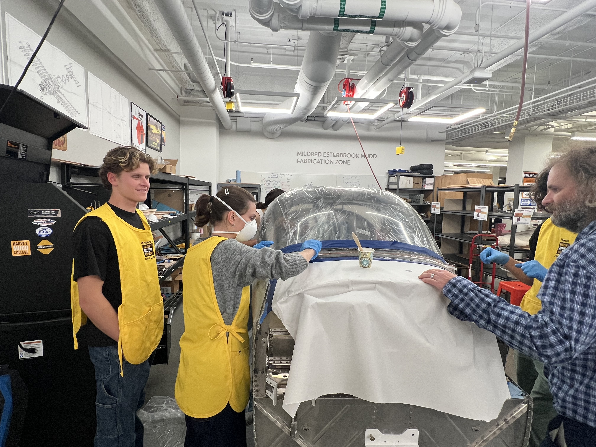
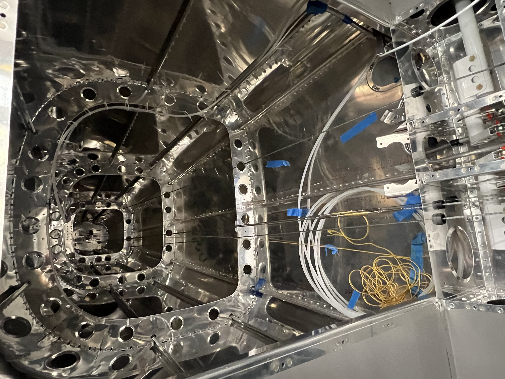

Building an RV12 Aircraft
Duration: June–July 2024 & January–May 2025
Spring 2025 Team
This project involved building an RV12 aircraft from a kit. Tasks included precision drilling, riveting and airframe assembly.
During my involvement, we focused on joining the fuselage sections—connecting the front and rear halves of the aircraft—and meticulously riveting the aluminum skin panels to form the outer structure.


In the spring, the team focused on shaping and building the canopy using fiberglass, which involved sanding and working with fiberglass dust to create a smooth, aerodynamic shell.

We also installed the control cables that link the rudder pedals and control stick to the rudder and horizontal stabilator. To ensure proper tension, the team built a custom tensiometer and calibrated it for accurate measurements.
The team also worked on the tailcone and empennage, carefully cutting fiberglass components to precise measurements. This phase included incorporating the vertical stabilizer with the rudder, as well as attaching the horizontal stabilator, ensuring proper alignment and fit for stable flight control. We also verified that the avionics controlling the anti-servo tab were still functioning correctly.

In addition, we spray-painted the interior of the plane, applying an even coat to protect the surfaces and give the inside a clean, professional finish.